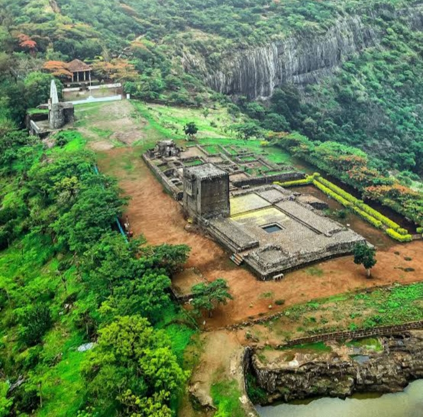
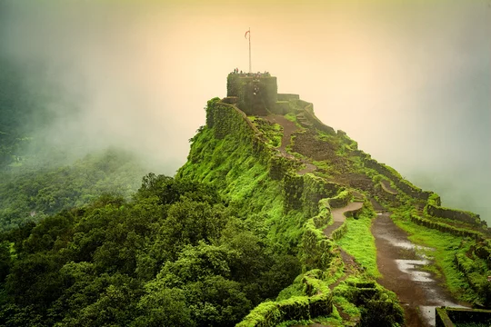
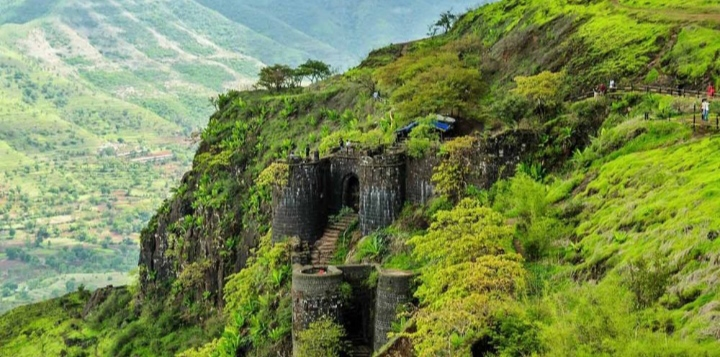
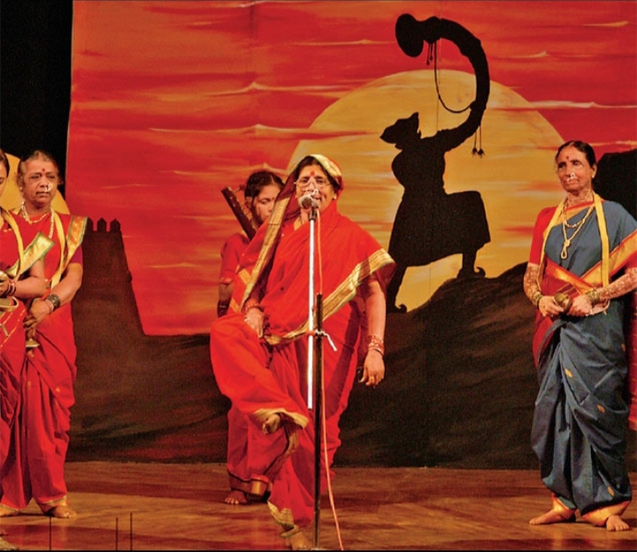
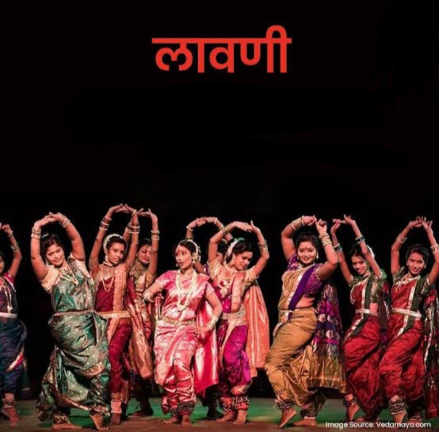
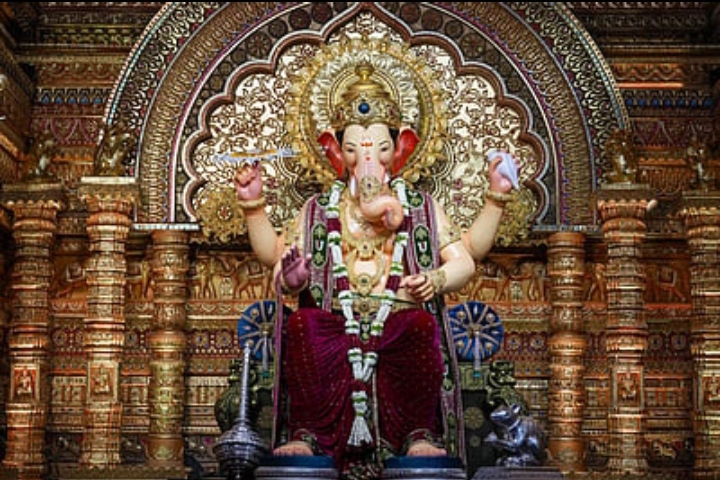

महाराष्ट्राची संस्कृती
महाराष्ट्र राज्याला समृद्ध इतिहास, परंपरा, कला व सणांचा वारसा लाभला आहे.

रायगड किल्ला
 रायगड किल्ला महाराष्ट्रातील रायगड जिल्ह्यात आहे.
रायगड किल्ला छत्रपती शिवाजी महाराजांचा आवडता किल्ला होता.
1656 साली शिवाजी महाराजांनी रायगड किल्ल्यावर छत्रपती म्हणून राज्याभिषेक केला.
रायगड किल्ला सह्याद्री पर्वत रांगेच्या उच्च टेकड्यांवर वसलेला असल्याने अत्यंत सुरक्षित होता.
किल्ल्याचे अद्भुत जल व्यवस्थापन
रायगड किल्ल्यावर साठवलेले पाणी कधीही संपत नाही असे बनवले गेले होते.
किल्ल्यावर अनेक पाण्याच्या टाक्या आणि तळ्यांचा जाळा आहे.
पावसाळ्यात पाणी जमा करून संपूर्ण वर्षभर पुरवठा होऊ शकतो.
हे शिवाजी महाराजांच्या योजना आणि शौर्याची ठळक निशाणी आहे.
मराठा साम्राज्याचा महत्त्वाचा ठिकाण
रायगड हे फक्त किल्ला नव्हे, तर मराठा साम्राज्याचे प्रशासनिक केंद्र होते.
रायगड किल्ला महाराष्ट्रातील रायगड जिल्ह्यात आहे.
रायगड किल्ला छत्रपती शिवाजी महाराजांचा आवडता किल्ला होता.
1656 साली शिवाजी महाराजांनी रायगड किल्ल्यावर छत्रपती म्हणून राज्याभिषेक केला.
रायगड किल्ला सह्याद्री पर्वत रांगेच्या उच्च टेकड्यांवर वसलेला असल्याने अत्यंत सुरक्षित होता.
किल्ल्याचे अद्भुत जल व्यवस्थापन
रायगड किल्ल्यावर साठवलेले पाणी कधीही संपत नाही असे बनवले गेले होते.
किल्ल्यावर अनेक पाण्याच्या टाक्या आणि तळ्यांचा जाळा आहे.
पावसाळ्यात पाणी जमा करून संपूर्ण वर्षभर पुरवठा होऊ शकतो.
हे शिवाजी महाराजांच्या योजना आणि शौर्याची ठळक निशाणी आहे.
मराठा साम्राज्याचा महत्त्वाचा ठिकाण
रायगड हे फक्त किल्ला नव्हे, तर मराठा साम्राज्याचे प्रशासनिक केंद्र होते.
शिवनेरी किल्ला
.
इतिहास: शिवनेरी किल्ला महत्त्वाचा ऐतिहासिक किल्ला आहे कारण छत्रपती शिवाजी महाराजांचा जन्म येथे १९ फेब्रुवारी १६३० रोजी झाला. हा किल्ला मूलतः १६व्या शतकात पेशव्यांपूर्वीच्या काळात डेक्कन राज्यांच्या काळात बांधला गेला होता. पेशव्यांच्या काळात हा किल्ला सैनिक प्रशिक्षणासाठी आणि संरक्षणासाठी महत्त्वाचा होता. किल्ल्याच्या उंचीवरून आसपासच्या पर्वतरांगा आणि तलावांचे सुंदर दृश्य दिसते. जन्मस्थान: छत्रपती शिवाजी महाराजांचा जन्म स्थान आहे. शिवनेरी किल्ला एक उंच टेकडीवर बांधला गेला आहे. किल्ला उंचावर असल्यामुळे शत्रूवर लक्ष ठेवणे सोपे होते. महत्त्व: छत्रपती शिवाजी महाराजांचा जन्मस्थान म्हणून हा किल्ला ऐतिहासिक आणि धार्मिक दृष्ट्या महत्त्वाचा आहे. महाराष्ट्रातील पर्यटनस्थळांपैकी एक प्रमुख आकर्षण आहे.प्रतापगड किल्ला

प्रतापगड ही महाराष्ट्रातील एक ऐतिहासिक किल्ला आहे, जो सह्याद्री पर्वतरांगेत वसलेला आहे. ख प्रतापगड किल्ला 1656 मध्ये छत्रपती शिवाजी महाराज यांनी बांधला होता. किल्ल्याचे मुख्य उद्दिष्ट मुघल सैन्यावर नियंत्रण ठेवणे आणि पश्चिम घाटात सुरक्षित रस्ता राखणे हे होते. अफझल खानाशी लढाई (1659) येथे प्रतापगडाची ऐतिहासिक महत्त्वाची घटना घडली. या लढाईत शिवाजी महाराजांनी अफझल खानाचा पराभव केला होता. किल्ला सुमारे ८०० मीटर उंचीवर आहे. किल्ला निसर्गरम्य टेकड्यांवर वसलेला असून, त्याच्याभोवती घनदाट जंगल आहे. गडावर चढताना निसर्गाच्या सौंदर्याचा अनुभव घेता येतो. शिवरायांचा स्मारक निसर्गरम्य दृश्ये आणि धबधबे.सिंहगड किल्ला

सिंहगड किल्ला ही महाराष्ट्रातील एक प्रसिद्ध ऐतिहासिक किल्ला आहे. स्थान: सिंहगड किल्ला पुणे शहरापासून सुमारे 30 किलोमीटर लांब वसलेला आहे. हा किल्ला पुणे जिल्ह्यातील पाचगणी तालुक्यात आहे. उंची: किल्ल्याची उंची समुद्रसपाटीपासून सुमारे 1300 मीटर आहे. इतिहास: या किल्ल्याचे मूळ नाव किल्हेरी असे होते. छत्रपती शिवाजी महाराजांनी 1670 साली हा किल्ला जिंकला. किल्ला पतंगराव पिंगळे यांच्यासाठी प्रसिद्ध आहे, कारण 1670 मध्ये तानाजी मालूसरे याने मुघलांविरुद्ध सिंहगड किल्ला जिंकला आणि त्याच्या शौर्याची ही कथा प्रसिद्ध आहे. "तानाजी की शौर्यगाथा" या किल्ल्याशी संबंधित आहे.लोककला:भारुड

भारुड हा महाराष्ट्रातील पारंपरिक लोकगीते व भक्तिगानाचा प्रकार आहे. हे गाणे मुख्यतः धार्मिक, सामाजिक आणि नीतिमूल्ये सांगणारे असते उत्सव किंवा गावात सणाच्या वेळी गायले जाणारे भारुड भारुड हा महाराष्ट्रातील लोकसंस्कृतीचा आणि धार्मिक परंपरेचा महत्त्वाचा भाग आहे. हे फक्त मनोरंजनासाठी नसून समाजातील नैतिक मूल्ये आणि धार्मिक श्रद्धा जागृत करण्याचे काम करते.लावणी

लावणी हा महाराष्ट्रातील एक प्रसिद्ध पारंपारिक नृत्य आणि संगीत प्रकार आहे, जो विशेषतः ढोलकीच्या तालावर सादर केला जातो.लावणी माहिती मराठीत लावणीचा उगम १६व्या शतकात झाला असे मानले जाते. पेशव्यांच्या काळात लावणीला विशेष भरभराट मिळाली. लावणी ही प्रामुख्याने ढोलकीच्या ठेक्यावर गायली व नाचली जाते. लावणीमध्ये प्रेम, समाज, राजकारण, वीरगाथा, शौर्य, उपरोध, व्यंग अशा विविध विषयांवर गाणी रचली गेली आहेत.सण-उत्सव:गणेशोत्सव

गणेशोत्सव हा महाराष्ट्राच्या संस्कृतीचा प्राण आहे. सार्वजनिक मंडपांत भव्य सजावट, दिवे आणि सांस्कृतिक कार्यक्रमांची रेलचेल दिसते. घराघरांत गणरायाची प्राणप्रतिष्ठा करून भक्त मोठ्या श्रद्धेने पूजा करतात. या उत्सवात समाजसेवा, एकोपा आणि ऐक्याचा संदेश दिला जातो. विसर्जनाच्या मिरवणुकीत ढोल-ताशांचा गजर आणि “गणपती बाप्पा मोरया”चा जयघोष दुमदुमतो.गुढीपाडवा
गुढीपाडवा हा महाराष्ट्रातील नवीन वर्षाचा पहिला दिवस असतो. हा दिवस चैत्र शुद्ध प्रतिपदाला साजरा केला जातो, जो ग्रेगोरियन कॅलेंडरनुसार मार्च किंवा एप्रिल महिन्यात येतो. नवीन वर्षाची सुरुवात, नवा उर्जा, समृद्धी आणि आनंद यासाठी हा सण साजरा केला जातो. गुढीची निर्मिती: गुढी हा उंच काठाच्या काठी बांधलेला रेशमी कापड (साड्यासारखा) असतो. त्यावर माळ, चांदी किंवा सोनेरी भांडी, नारळ व फुलांची सजावट केली जाते. गुढी उभारल्याने घरात सुख, समृद्धी व यश प्राप्त होते असे मानले जाते.महाराष्ट्राची संस्कृती
महाराष्ट्र राज्याला समृद्ध इतिहास, परंपरा, कला व सणांचा वारसा लाभला आहे.
🏰 किल्ले
रायगड किल्ला
रायगड किल्ला महाराष्ट्रातील रायगड जिल्ह्यात आहे. छत्रपती शिवाजी महाराजांचा आवडता किल्ला होता. 1656 साली शिवाजी महाराजांनी येथे राज्याभिषेक केला. हा किल्ला सह्याद्री पर्वतावर उंच ठिकाणी असल्यामुळे अत्यंत सुरक्षित होता. किल्ल्यावर उत्कृष्ट जलव्यवस्था होती आणि पाणी वर्षभर उपलब्ध राहत असे. रायगड हा मराठा साम्राज्याचे प्रशासनिक केंद्र होता.
शिवनेरी किल्ला
शिवनेरी किल्ला महत्त्वाचा ऐतिहासिक किल्ला आहे. छत्रपती शिवाजी महाराजांचा जन्म येथे १९ फेब्रुवारी १६३० रोजी झाला. हा किल्ला उंच टेकडीवर बांधलेला असून संरक्षणासाठी अत्यंत उपयुक्त होता. येथून आसपासच्या प्रदेशावर लक्ष ठेवणे सोपे होते. हा किल्ला पर्यटनासाठीही प्रसिद्ध आहे.
प्रतापगड किल्ला
प्रतापगड किल्ला सह्याद्री पर्वतरांगेत वसलेला आहे. 1656 मध्ये शिवाजी महाराजांनी बांधला. येथे 1659 मध्ये अफजल खानाशी ऐतिहासिक लढाई झाली. किल्ला निसर्गरम्य वातावरणात असून पर्यटनासाठी प्रसिद्ध आहे.
सिंहगड किल्ला
सिंहगड किल्ला पुण्याजवळ आहे. याची उंची सुमारे 1300 मीटर आहे. 1670 मध्ये तानाजी मालुसरे यांनी शौर्य दाखवून हा किल्ला जिंकला. हा किल्ला इतिहास आणि निसर्ग दोन्हीसाठी प्रसिद्ध आहे.
🎭 लोककला
लावणी
लावणी हा महाराष्ट्रातील प्रसिद्ध नृत्य आणि संगीत प्रकार आहे. ढोलकीच्या तालावर सादर केला जातो. यात प्रेम, समाज, शौर्य आणि व्यंग असे विविध विषय असतात. पेशव्यांच्या काळात याला भरभराट मिळाली.
भारुड
भारुड हा पारंपरिक लोकगीत प्रकार आहे. धार्मिक आणि सामाजिक संदेश देणारे गाणे असते. सण आणि उत्सवांमध्ये सादर केले जाते. समाजातील नैतिक मूल्ये सांगण्याचे कार्य करते.
🎉 सण-उत्सव
गणेशोत्सव
गणेशोत्सव हा महाराष्ट्राचा प्रमुख सण आहे. घराघरांत आणि सार्वजनिक मंडपांत साजरा केला जातो. ढोल-ताशा, सजावट आणि सांस्कृतिक कार्यक्रम असतात. समाजात एकोपा आणि ऐक्य वाढवतो.
गुढीपाडवा
गुढीपाडवा हा मराठी नववर्षाचा पहिला दिवस आहे. चैत्र महिन्यात साजरा केला जातो. गुढी उभारून नवीन वर्षाची सुरुवात केली जाते. हा सण समृद्धी आणि आनंदाचे प्रतीक आहे.